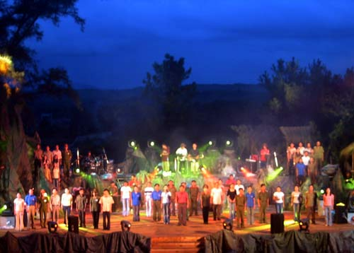

EVENTS AND FESTIVALS

Besides the cultural heritage revolutionary war, the typical heritage, colorful culture, of Quang Tri land also is adorned by the spirit of carnival, the home crowd. It is the traditional folk festivals such as Chinese New Year, Tet Doan Ngo; New Year dinner; Cau Ngu festival; religious festivals such as the Vu Lan ceremony, procession of Our Lady of La Vang; revolutionary and festivals calendar use development is being formed as the festival "drinking water, remember its source", "Legends of the Annamite realm" commemorating martyrs Invalids 27-7 in the form of drop flowers on the Thach Han River; festival "Unity young river "at double the Ben Hai River. In addition to the aforementioned festival, in Quang Tri, there are folk games usually take place in the New Year. New Year, many villages celebrate, happy spring: Run hard, swinging, playing cards games, boat racing, opera, wrestling, cock fighting ...
Festivals, folk games as a cultural community, with the popularity of social life, charismatic majority of the people, especially the young people involved.
Quang Tri and habits as well as in other areas is stressed motto "option and save". Customs and rituals are reduced to the minimum sufficient. Quang Tri people fully agree proverb: "No one compliments the wedding, no one laughs funeral". Wedding, marriage is no longer "green holidays" feudal, but only two holidays: festivals and weddings ... folklore Quang Tri from an early age but written literature appeared later. According to data collected from the fifteenth century to the eighteenth century with the poetry people save in as: Dang Quang (XV century), Le Tri County (XVI century), Nguyen Phuc Chu (century XVII), Tran Duy China (XVIII century); period from the nineteenth century to 1945: Typical of Han poetry, scripts Nguyen Huu Kidney, Tran Dinh Tuc, atomic, representing parts poetry script: Phan Van Dat Le The Hieu, Hong Chuong Tran Huu Duc ...
Modern Literature (1945 - 1975) Authors: Che Lan Vien Duong Tuong, Liang An, Tan Hoai, Nguyen Khac Monday, the New Tea ...
Quang Tri is the home of many famous celebrity science and land of Vietnam. From the beginning of the XVI century, especially during the Nguyen Dynasty, have many doctoral parking, deal table. Number of doctors: Bui Duc Finance (home Hai Lang), pass: 1502 (during the reign of King Le Hien Tong); Nguyen Duc Hoan (Hai Lang), pass: 1835 (King Minh Mang); Nguyen Tri (Million), pass: 1835 (King Minh Mang); Le Duc (Vinh Linh), years pass: 1841 (King Thieu Tri); Nguyen Xuan Thu (Vinh Linh), pass: 1841; Nguyen Version (Gio Linh), years pass: 1843 (King Thieu Tri); Nguyen Duong Huy (...) years pass: 1844 (King Thieu Tri); Van Chuong Nguyen (Vinh Linh), in his examination : 1844 (King Thieu Tri); Nguyen Duc Tu Hai Lang, years pass: 1847 (King Thieu Tri); Nguyen Van Hien Hai Lang, pass: 1847; Le Thuy (Million), years passed: 1875 (King Tu Duc); Chen Phat (Gio Linh), pass: 1877 (time of King Tu Duc); Hoang Binh (Million), the years pass: 1889 (King Thanh Thai); Le Play (Gio Linh), years pass: 1895 (King Thanh Thai); atoms, such as (Gio Linh), years pass: 1898 (King Thanh Thai); Nguyen Ham (Million), in his examination: 1910 (King Duy Tan) ... Fame of the doctor on the younger generation of Quang Tri after the August Revolution of 1945 did not stop embellished.
Ping Arieu Festival, also known as burial ceremony and deified, is a traditional festival brings unique spiritual culture, and is the biggest festival of the Pa Co people.
With buffalo Festival, rice food festival, A Rieu Ping festival takes place with many rich and meaningful activities such as: the parade and ceremonial incense; folk games: archery contest crossbows and push sticks, playing gongs ... with the desire to give up the spirit of the lyrics, dance, produce of home to pray for a prosperous new year, prosperous and happy.
In particular, at the festival was held, the gong dance is shown along with the folk songs ring flickering around the majestic mountain forests of the Annamite Mountains; like tone Xieng, Kaloi, Father accepted, A , Ra slope ... is the cultural soul of the people Pako. The rhythmic dance, deep in the music of the boys, girls Pako by the fire of the festival has attracted visitors from near and far as well as numerous relatives to see, enjoy and have fun ...
The village elders and chiefs said that gongs are an indispensable means of the festival, showing the harmony between man and man in the community, as well as people with heaven and earth. Gongs also become characteristic culture, closely connected with the lives of the people Pako.
Long, Festival Arieu Ping was held to honor and remember the deceased, as well as the opportunity for minority ethnic highlands of Quang Tri province to meet, exchange, fun spring Tet . The festival is a significant practical activities and creativity, contributing to the maintenance and promotion of identity, traditional cultural values of the people in the district Dakrong particular and ethnic minorities in general.